Chapter 09 가상메모리
- 물리 및 가상주소 방식
- 주소공간
- 캐싱 도구로서의 VM
- 메모리 관리를 위한 도구로서의 VM
- 메모리 보호를 위한 도구로서의 VM
- 주소의 번역
- 사례 연구: 인텔 코어 i7/리눅스 메모리 시스템
- 메모리 매핑
- 동적 메모리 할당
- 가비지 컬렉션
- C 프로그램에서의 공통된 메모리 관련 버그
- 요약
9.8 메모리 매핑
- 매핑: 리눅스는 가상메모리 영역의 내용을 디스크의 객체에 연결해서 초기화한다.
- 영역들은 다음 두 종류의 객체 중의 하나로 매핑될 수 있다.
- 리눅스 파일 시스템 내의 일반 파일: 한 영역은 실행가능 목적파일과 같은 일반 디스크 파일의 연속적인 섹션으로 매핑될 수 있다.
- 무기명 파일: 한 영역은 또한 무기명 파일로 매핑될 수 있다.
- 가상페이지가 초기화된 후에는 커널이 관리하는 특별한 스왑 파일 사이에서 스왑 인되었다가 아웃되었다가 한다.
- 스왑 파일은 스왑 공간 또는 스왑 영역이라고도 한다.
9.8.1 다시 보는 공유 객체
- 메모리 매핑에 대한 아이디어는 만일 가상메모리 시스템이 보통의 파일 시스템과 통합될 수 있다면, 단순하고 효과적으로 프로그램과 데이터를 메모리에 로드할 수 있을 것이라는 기발한 생각에서 생겨났다.
- 프로세스 개념은 각 프로세스에 자신만의 가상 주소공간을 제공하며, 이것은 다른 프로세스들에 의해 잘못된 쓰기와 읽기 작업이 발생하는 것을 막아준다.
- 객체는 공유 가상메모리 영역으로 공유 객체 또는 사적private 개체로 매핑될 수 있따.
- 공유 객체에 매핑: 프로세스가 해당 영역에 쓰는 모든 내용은 자신의 공유 메모리 내로 객체를 매핑한 다른 프로세스들도 볼 수 있게 한다. 변경된 내용은 디스크 상의 원래의 객체에도 반영된다.
- 사적 객체에 매핑: 해당 영역에 가한 수정사항들은 다른 프로세스들은 볼 수 없다.
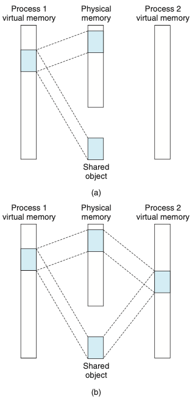
- 위의 그림은 공유 객체이다.
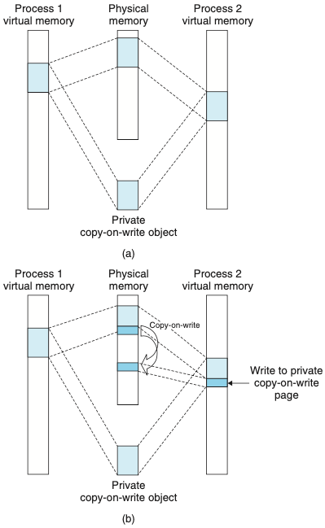
- 위의 그림은 사적 copy-on-write 객체이다.
- 사적 객체들은 copy-on-write라고 알려진 기법을 사용해서 가상메모리에 매핑된다.
- 공유된 객체에 다른 프로세스가 쓰기 작업을 하게 되면 새로운 사본을 물리페이지 내에 만들고 해 사본을 가르키게 한다.
- copy-on-write는 마지막 가능한 순간까지 사적 객체 내에서 페이지를 복사하는 것을 지연시켜서 부족한 물리 메모리를 가장 효율적으로 사용한다.
9.8.2 다시 보는 fork 함수
- 현재 프로세스가 fork 함수를 호출하면, 커널은 새로운 프로세스를 위한 여러가지 자료 구조를 생성하고, 여기에 고유한 PID를 부여한다.
- 새 프로세스를 위한 가상메모리를 생성하기 위해 현재 프로세스의 mm_struct, 영역 구조체, 페이지 테이블과 동일한 사본을 만든다.
- 두 프로세스의 모든 페이지들을 읽기-허용으로 표시하고, 두 프로세스의 영역 구조체들을 사적 copy-on-write로 표시한다.
9.8.3 다시 보는 execve 함수
- 가상메모리와 메모리 매핑은 또한 프로그램을 메모리로 로딩하는 과정에서 중요한 역할을 한다.
- execve 함수는 현재 프로세스 내에서 현재 프로그램을 효과적으로 교체하면서 실행 목적파일에 포함된 프로그램을 실행하고 로드한다.
- 기존 사용자 영역을 제거한다.
- 사적 영역을 매핑한다. copy-on-write형식을 사용한다.
- 공유 영역을 매핑한다.
- 프로그램 카운터를 설정한다.
9.8.4 함수를 이용한 사용자수준 메모리 매핑
- 리눅스 프로세스들은 함수를 이용해서 가상메모리의 새로운 영역들을 만들 수 있으며, 객체들을 이 영역으로 매핑할 수 있다.
- mmap 함수: 커널에 새 가상메모리 영역을 생성해 줄 것을 요청
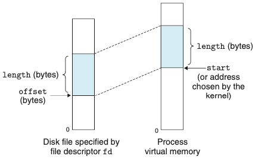
-
위의 그림은 mmap 인자의 시각적 해석
-
nunmap 함수: 가상메모리의 영역들을 삭제한다.
9.9 동적 메모리 할당
- 동적 메모리 할당기을 사용하여 추가적인 가상메모리를 런타임에 획득한다.
- 동적 메모리 할당기는 힙heap 이라고 하는 프로세스의 가상메모리 영역을 관리한다.
- 힙은 미초기화된 데이터 영역 직후에 시작해서 위쪽(높은 주소 방향)으로 커지는 무요구 메모리 영역이라고 가정한다.
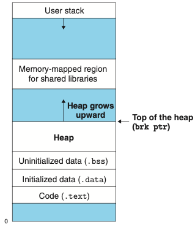
-
위의 그림은 힙heap 이다.
-
할당기는 힙을 다양한 크기의 블록들의 집합으로 관리한다.
- 명시적 할당기: application이 명시적으로 할당된 블록을 반환해 줄 것을 요구한다. malloc 패키지.
- 묵시적 할당기: 할당된 블록이 더 이상 프로그램에 의해 사용되지 않고 블록을 반환하는지를 할당기가 검출할 수 있을 것을 요구한다. 가비지 컬렉터garbage collector.
9.9.1 malloc과 free함수
- malloc 함수: 힙으로부터 블록들을 할당받는다.
- sbrk 함수: brk 포인터에 인자값(incr)을 더해서 힙을 늘리거나 줄인다.
- free 함수: 할당된 힙 블록을 반환한다.
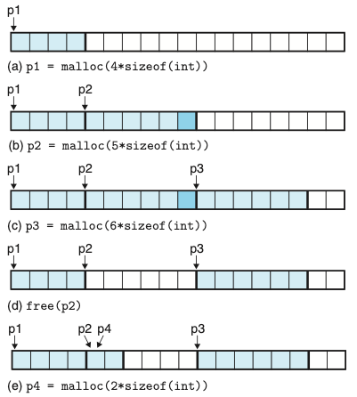
- 위의 그림은 malloc과 free를 사용해서 블록을 할당하고 반환시키는 모습을 보여준다.
9.9.2 왜 동적 메모리 할당인가?
- 프로그램을 실제 실행시키기 전에는 자료 구조의 크기를 알 수 없는 경우들이 있기 때문이다.
- 예를들어 n만큼의 배열 길이를 초기화 해줘야 하는데, n은 프로그램 실행 후에 입력받는다면, 배열의 길이를 n만큼 동적 할당해줘야한다.
9.9.3 할당기 요구사항과 목표
- 명시적 할당기들은 다소 엄격한 제한사항 내에서 동작해야 한다.
- 임의의 요청 순서 처리하기: application은 각각의 가용 블록이 이전의 할당 요청에의해 현재 할당된 블록에 대응되어야 한다는 제한사항을 만족해야한다.
- 요청에 즉시 응답하기
- 힙만 사용하기: 비확장성 자료 구조들은 힙 자체에 저장되어야 한다.
- 블록 정렬하기(정렬 요건) : 어떤 종류의 데이터 객체라도 저장할 수 있도록 정렬해야한다.
- 할당된 블록을 수정하지 않기: 할당기는 가용 블록을 조작하거나 변경할 수만 있다. 할당된 블록은 수정하거나 이동하지 않는다.
- 할당기는 두가지 목표를 달성하기 위해 노력한다.
- 처리량 극대화하기
- 메모리 이용도를 최대화하기
9.9.4 단편화
- 단편화: 가용 메모리가 할당 요청을 만족시킬 수 없는 상태 일어난다.
- 내부 단편화: 할당된 블록이 데이터 자체보다 더 클 때 일어난다. 사용하지 않는 블록이 낭비된다.
- 외부 단편화: 요청을 처리할 수 있는 단일한 가용블록이 없는 경우 발생한다. (가용 가능한 블록을 모두 모으면 충분한 크기가 존재하지만 단일 블록들이 만족할 수 없어서)
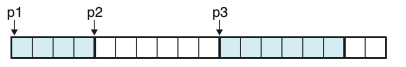
- 외부 단편화를 위의 그림을 예로 든다면, 8워드 블록의 할당을 요청하면, 가용 블록들을 모두 모으면 가능하지만, 6워드 블록과, 2워드 블록으로 나뉘어져 있기 때문에 외부 단편화가 일어난다.
9.9.5 구현 이슈
- 가용 블록 구성: 어떻게 가용 블록을 지속적으로 추적하는가?
- 배치: 새롭게 할당된 블록을 배치하기 위한 가용 블록을 어떻게 선택하는가?
- 분할: 블록을 새롭게 할당 후 가용 블록의 나머지 부분들로 무엇을 할 것인가?
- 연결: 방금 반환된 블록으로 무엇을 할 것인가?
9.9.6 묵시적 가용 리스트(implict free list)
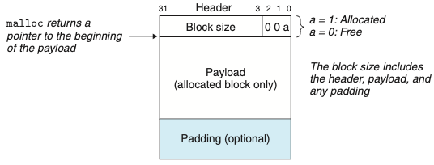
- 위의 그림은 힙 블록의 포맷이다.
- 한 블록은 1워드 헤더, 데이터, 추가적인 패딩으로 구성된다.
- 헤더: 블록 크기와 블록이 할당되었는지 가용 상태인지를 인코딩한다. 블록 크기는 정렬 기준의 배수이다.
- 데이터: 헤더 다음에는 malloc을 불렀을 때 요구한 데이터가 따라온다.
- 패딩: 패딩의 크기는 가변적이다. 패딩을 해야하는 이유는 1)외부 단편화를 극복하기 위해, 2)정렬 요구사항을 만족하기 위해
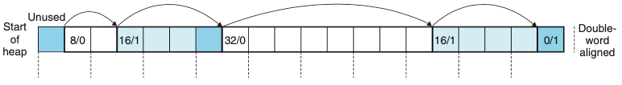
- 위의 그림은 묵시적 가용 리스트를 사용해서 구현한 힙이다.
- 8byte 더블 워드 정렬을 기준으로 구현했기 때문에 블록의 크기는 항상 8의 배수이다.
- 이러한 구조를 묵시적 리스트라고 부르는데, 가용 블록이 헤더 내 필드에 의해서 묵시적으로 연결되기 때문이다.
9.9.7 할당한 블록의 배치
- application이 메모리 할당을 요청할 때 요청한 블록을 저장하기에 충분히 큰 가용 블록을 리스트에서 검색한다. 할당기가 검색을 수행하는 방법은 배치 정책에 의해서 결정된다.
- First fit: 가용 리스트를 처음부터 검색한다.
- Next fit: 이전 검색이 종료된 지점에서 검색을 시작한다.
- Best fit: 모든 가용 블록을 검사하며 크기가 맞는 가장 작은 블록을 선택한다.
9.9.8 가용 블록의 분할
- 할당기는 가용 블록을 두 부분으로 나눈다.
- 예를들어 8워드 크기의 가용 블록중 2워드 크기를 할당하면 나머지 6워드 크기의 내부 단편화가 생긴다. 이를 분할해서 6워드 크기의 가용 블록을 새로 만든다.
9.9.9 추가적인 힙 메모리 획득하기
- 가용 블록이 부족하다면 할당기는 커널에게 sork 함수를 호출해서 추가적인 힙 메모리를 요청한다.
9.9.10 가용 블록 연결하기
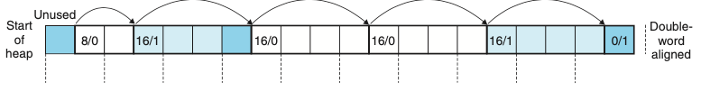
- 위의 그림은 가용할 수 있는 블록이 16/0 으로 두개로 나뉘어져 있다. 이는 오류 단편화false fragmentation라고 한다.
- 이를 극복하기 위해서 16/0으로 나뉘어져 있는 가용블록을 32/0으로 연결한다.
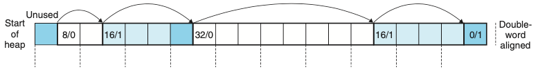
-
위의 그림처럼 연결 된다.
- 즉시 연결: 할당기는 블록이 반환될 때마다 인접 블록을 통합한다.
- 지연 연결: 일정 시간 후에 가용 블록들을 연결하기 요청이 들어오면 블록들을 통합한다.
9.9.11 경계 태그로 연결하기
- 현재 블록(반환하려고 하는 블록)의 헤더는 다음 블록의 헤더를 가리키고 있으며, 이것은 다음 블록이 가용한지 결정하기 위해 체크될 수 있다. 하지만 이전 블록을 체크 할 수 있는 방법은 없다. 해당 문제점을 해결하기 위해서 경계 태그 기법을 만들었다.
- 경계태그: 각 블록의 끝 부분에 풋터footer(경계 태그)을 추가하고 이 풋터는 이전 블록의 헤더를 복사한 것이다.
9.9.12 종합설계: 간단한 할당기의 구현
현재 실력으로 구현은 조금 힘든 것 같아서 지식을 조금 더 쌓고 꼭 구현해보도록 하겠다!
9.9.13 명시적 가용 리스트(explicit free list)
- 묵시적 가용 리스트는 블록 할당 시간이 전체 힙 블록의 수에 비례하기 때문에 범용 할당기에는 적합하지 않다.
- 명시적 가용 리스트는 가용 블록들을 일종의 명시적 자료구조로 구성하는 것이다.
- 가용 블록들을 연결리스트로 모두 쭈르륵 연결한거라고 생각하면 된다! 반면에 묵시적 가용 리스트는 모든 블록을 연결한다.
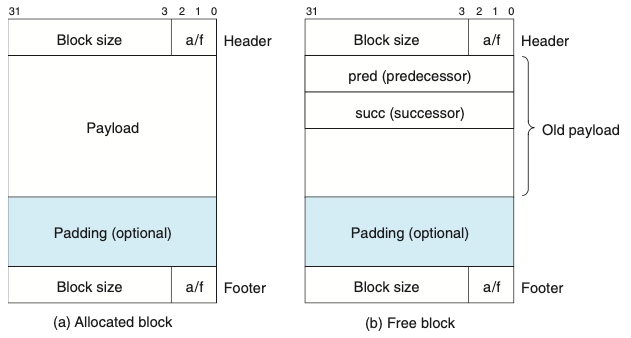
-
위의 그림은 이중 연결 가용 리스트를 사용하는 힙 블록의 포맷이다. -가용 블록 내에 pred와 succ 포인터를 포함하는 이중 연결 리스트로 구성된다.
- 명시적 가용 리스트의 접근법
- 후입선출(LIFO): 리스트를 새롭게 반환한 블록들을 리스트의 시작 부분에 삽입해서 후입선출 순으로 유지 하는 것이다. LIFO 순서와 first fit 배치 정책을 사용하면, 할당기는 대부분의 최근에 사용된 블록들을 먼저 조사한다.
- 주소 순으로 정렬: 리스트를 주소 순으로 정렬해 리스트 내 각 블록의 주소가 다음 블록의 주소보다 작도록 한다. 후입선출 방식보다 좀 더 좋은 메모리 이용도를 가진다.
- 명시적 리스트의 단점은 가용 블록들이 header와 footer 뿐만 아니라 필요한 포인터까지 포함해야한다는 것이다. 그래서 최소 블록 크기가 커지고 내부 단편화 가능성이 증가한다.
9.9.14 분리 가용 리스트
- 단일 연결 가용 블록 리스트를 사용하는 할당기는 한 개의 블록을 할당하는 데 가용 블록의 수에 비례하는 시간이 필요하다.
- 할당 시간을 줄이기 위해 분리 저장장치segregated storage는 다수의 가용 리스트를 유지하며, 각 리스트는 거의 동일한 블록들을 저장한다.
- 모든 가능한 블록 크기를 크기 클래스size class라고 하는 동일 클래스의 집합들로 분리하는 것이다.
9.10 가비지 컬렉션
- 가비지 컬렉터garbage collector: 더 이상 프로그램에서 사용하지 않는 블록들을 자동으로 반환하는 동적 저장장치 할당기다.
- 가비지garbage: 사용하지 않는 블록들
- 가비지 컬렉션: 자동으로 힙 저장장치를 반납하는 과정
많은 가비지 컬렉션이 있지만, 우리는 논의를 가비지 컬렉션을 처음 개발한 McCarthy의 오리지널 Mark&Sweep 알고리즘에 국한할 것이다.
9.10.1 가비지 컬렉터 기초
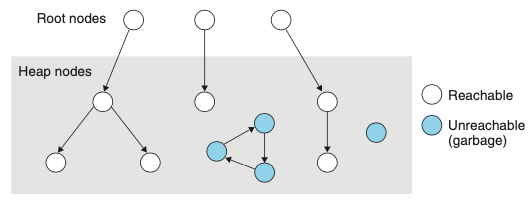
- 가비지 컬렉터는 위의 그림과 같이 방향성 도달 그래프로 메모리를 고려한다.
- 그래프의 노드들은 루트 노드들과 힙 노드들로 나눈다.
- 각 힙 노드는 힙 내 한 개의 할당된 블록에 대응된다.
- 방향성 에지egde p -> q는 블록 p 내부의 위치가 블록 q 내부의 위치를 가리킨다는 것을 의미한다.
- 루트노드들은 가상메모리의 읽기-쓰기 데이터 영역 내 레지스터, 스택변수, 전역변수가 될 수 있따.
- 어떤 루트 노드에서 p로 방향성 경로가 존재한다면, p는 도달할 수 있다고 말한다.
- application은 어떤 시점에서든 도달할 수 없는 노드를 다시는 사용할 수 없는 가비지에 대응시킨다.
- 가비지 컬렉터의 역할은 이 도달성 그래프의 표시를 관리하는 것과 도달 불가 노드들을 free시키는 것이다.
- 컬렉터들은 자신의 서비스를 요청에 의해서 제공하거나, application과 병렬로 별도의 쓰레드로서 실행되어 도달성 그래프를 지속적으로 갱신하고 가비지를 회수한다.
9.11 C 프로그램에서의 공통된 메모리 관련 버그
- 메모리 관련 버그들은 위험하다, 그 이유는 이들이 종종 시간과 공간적으로 버그의 원인으로부터 멀리 떨어진 곳에서 자신을 드러내기 때문인다.
- 메모리 관련 버그
- 잘못된 포인터 역참조
- 초기화되지 않은 메모리를 읽는 경우: bss 메모리 위치들은 0으로 초기화, 하지만 힙 메모리는 그렇지 않다.
- 스택 버퍼 오버플로우 허용하기: 배열의 범위를 벗어나면 버퍼 오버플로우를 갖는다.
- Off-by-One 에러 만들기: 덮어쓰기 버그
- 포인터가 가리키는 객체 대신에 포인터 참조하기
- 존재하지 않는 변수 참조하기
- 가용 힙 블록 내 데이터 참조하기
- 메모리 누수leak 유발: 블록을 할당하고 반환을 하지 않는다.
9.12 요약
- 가상 메모리는 메인 메모리를 추상화한 것이다.
- 가상메모리를 지원하는 프로세서는 가상주소지정이라고 하는 간접화의 형태로 메인 메모리를 참조한다.
- 프로세서는 가상주소를 생성하고, 이것은 메인 메모리로 보내지기 전에 물리 주소로 번역된다.
- 페이지 테이블을 사용해서 번역한다.
- 가상 메모리는 세 가지 중요한 기능을 제공한다.
- 자동으로 최근에 사용한 디스크상의 가상 주소공간의 내용을 메모리로 캐시한다.
- 페이지: 가상 메모리 캐시에서 블록
- 가상메모리는 메모리 관리를 단순화해 주고, 링킹, 프로세스들 간의 데이터 공유, 프로세스를 위한 메모리 할당, 프로그램 로딩을 단순화해 준다.
- 가상메모리는 매 페이지 테이블 엔트리 내 보호 비트를 사용해서 메모리 보호를 단순화해 준다.
- 자동으로 최근에 사용한 디스크상의 가상 주소공간의 내용을 메모리로 캐시한다.
- TLB를 사용해서 캐시의 동작과 통합
- 메모리 매핑: 가상메모리 블록을 디스크 상의 파일 묶음에 이들을 연계해서 초기화하는 과정
- 메모리 매핑은 데이터의 공유, 새로운 프로세스의 생성, 프로그램의 로딩을 위한 효율적인 메커니즘을 제공
- 메모리 할당기
- 힙이라고 부르는 가상의 주소공간 영역에 블록 할당
- 명시적 할당기: malloc (동적 메모리 할당기)
- 묵시적 할당기: 가비지 컬렉터 (자동으로 미사용 블록들 반환)